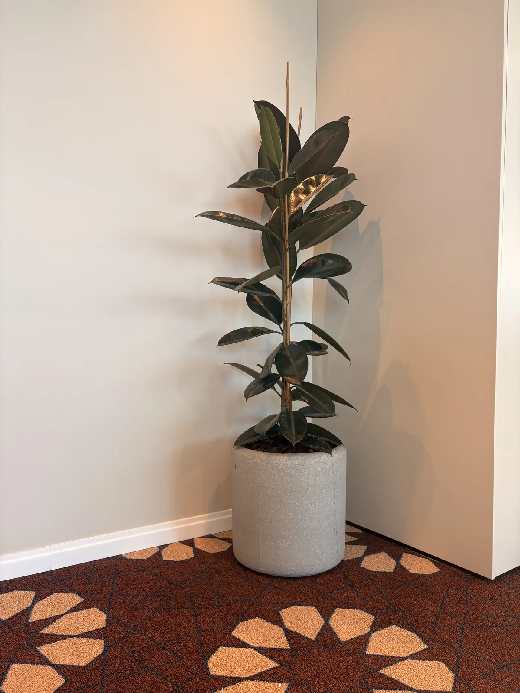
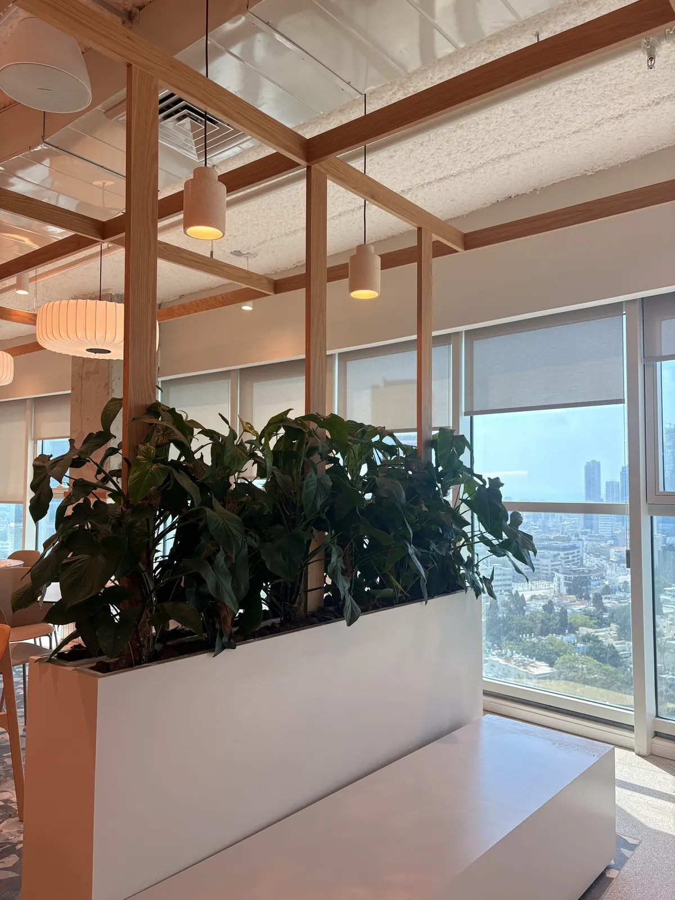
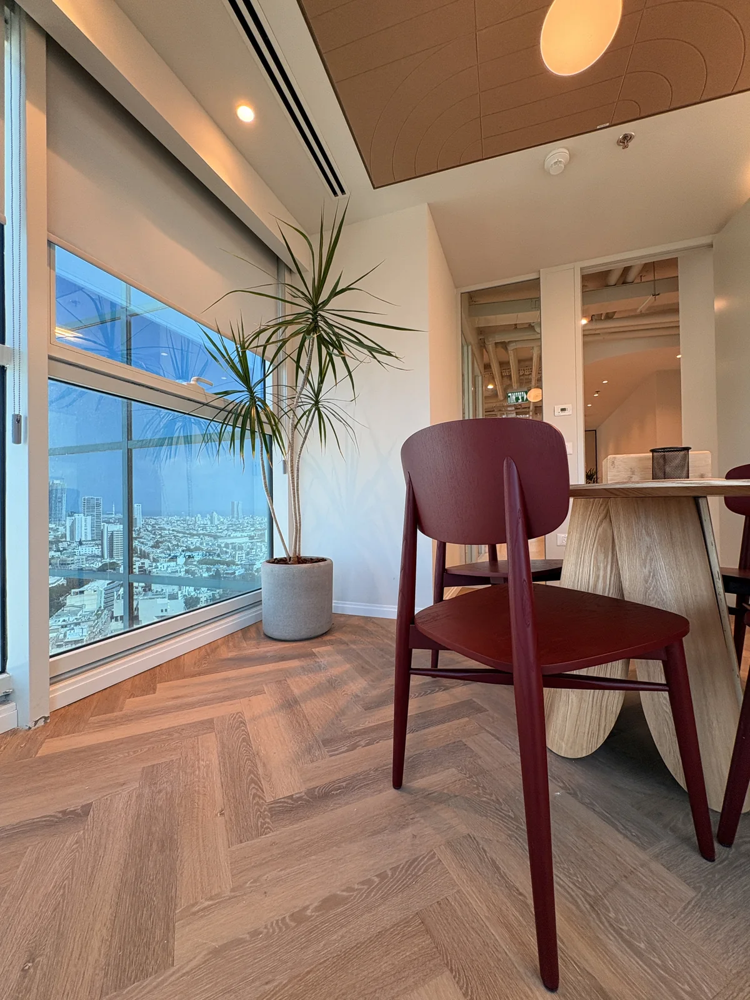
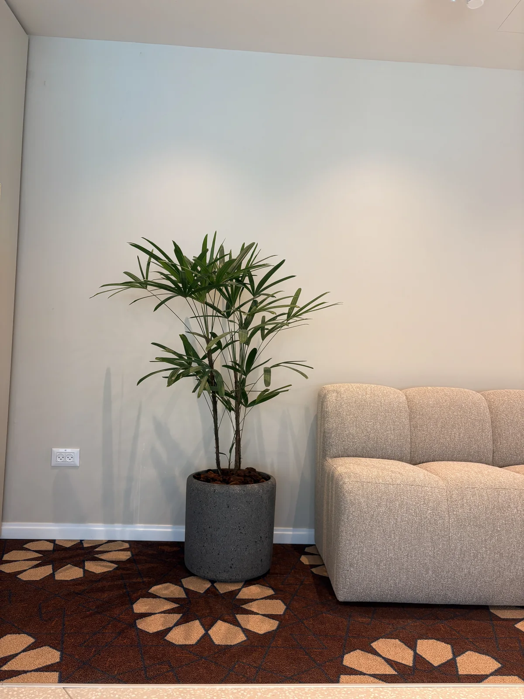
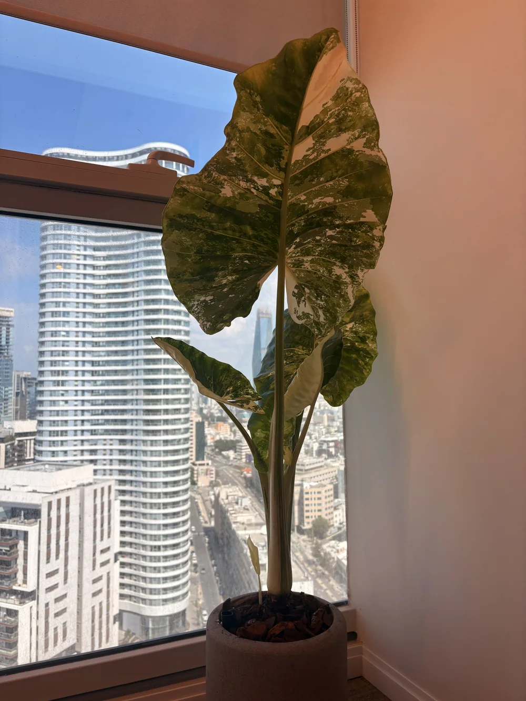

הצמחת קומת משרדים שלמה במגדל. הצמחייה עושה גם עיצוב וגם פונקציה: אדניות תעלה מחלקות את החלל הפתוח בלי קירות.
עשרות כדי בטון בגדלים שונים, אדניות תעלה לבנות באזורים המשותפים והצבה נקודתית בחדרי ישיבות ופינות המתנה.
פיקוס כינורי, קנטיה, רפיס, דרצנה, אלוקסיה ומונסטרה. כל צמח נבחר לפי כמות האור באזור שלו בקומה.




בואו נדבר
מתחילים בשיחת אפיון ללא התחייבות. נבין את החלל, ונגיד לכם בכנות מה אפשר לעשות
שלחו הודעה עכשיועונים בהקדם · שאלון אפיון הגינה ←